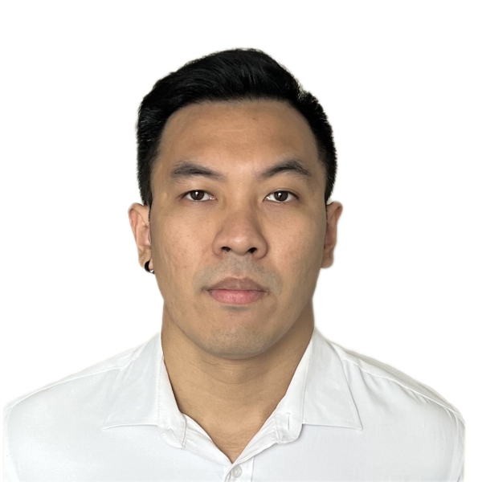

Krittapas Naksuwan
Summary

Project Manager / Project Coordinator (Japanese Speaking)
Accomplished IT & Animation professional with extensive project management experience and advanced proficiency in the Japanese language.
Education
-
NIPPON PHOTOGRAPHY INSTITUTE (Tokyo, Japan)
-
Commercial Photography (April 2010 – March 2012)
-
Tamagawa International Language School (Tokyo, Japan)
-
Japanese Study (January 2009 – March 2010)
-
Chulalongkorn University, Bachelor of Arts (Bangkok, Thailand)
-
Accumulative GPA: 3.40 (2nd Class Honor)
-
Major: History, Minor: Japanese
Work Experience
IT & Animation Related:
-
PROUDIA STUDIO Co., Ltd. (February 2019 – Present)
Division: 3DCG Department
Position: Production Manager
-
Schedule, track and manage assigned work with the 3DCG animation team leader and supervisor.
-
Ensure work is on schedule for each project and meet internal and external (client) deadlines.
-
Manage and communicate with animators regularly to ensure there is a clear understanding of assignments and deadlines.
-
Work and communicate directly with 3DCG creative director and animation team leader at Japan Head Office via Mattermost.
-
Interpret for a kickoff meeting and leader meeting.
-
Translate project documents from Japanese to Thai.
-
LINE Fukuoka Corporation (March 2016 – February 2019)
Division: Localization Department
Position: Localization Specialist
-
Responsible for translating in-game text, banner text, notice, and various game-related documents from Japanese to Thai.
-
Review, proofread, edit, and re-write various translated game texts to ensure readability and appropriateness for Thai customers.
-
Provide commercially attractive and creative translations for in-game text, banner text, or related websites.
-
Create, update, and maintain various localization documents (including style guide, and process guide) as well as Game glossary and Terminology.
-
Cooperate with Language Quality Assurance Team (LQA) for checking in-game text for quality output.
-
enish (Thailand) Co., Ltd. (August 2014 – June 2015)
Division: Product Management Team
Position: Japanese Game Customer Support Manager
-
Responsible for assisting customers by providing accurate product and service information.
-
Resolve customer complaints and answer questions via e-mail.
-
Work and communicate directly with Customer Support Team and Engineer/Product leader at Head Office via Chatwork Program.
-
Customer Support Team Administration.
-
Shift Work Schedule Optimization.
-
Task Prioritization and Workflow Optimization.
-
Review thoroughly the grammar and sentence structure before replying to e-mail to Japanese customers.
-
Responsible for translating articles from Japanese to Thai such as
Game Play Cycle, Monthly Report, or assigned tasks from the General Manager.
Skills
-
Hard Skills
-
Japanese Language
-
HTML
-
CSS
-
Javascript (Basic)
-
Google Docs for Work
-
XTM (Translation Management Program for Localization Process)
-
Asana (Project management program)
-
Soft Skills
-
Leadership & Management
-
Team Communication
-
Time Management
-
Positive Attitude
Certificates
-
TOEIC scores: 855
-
Japanese JPLT level N1
-
Japanese JPLT level N2
Other
⭐Please check
my hobbies and contact⭐